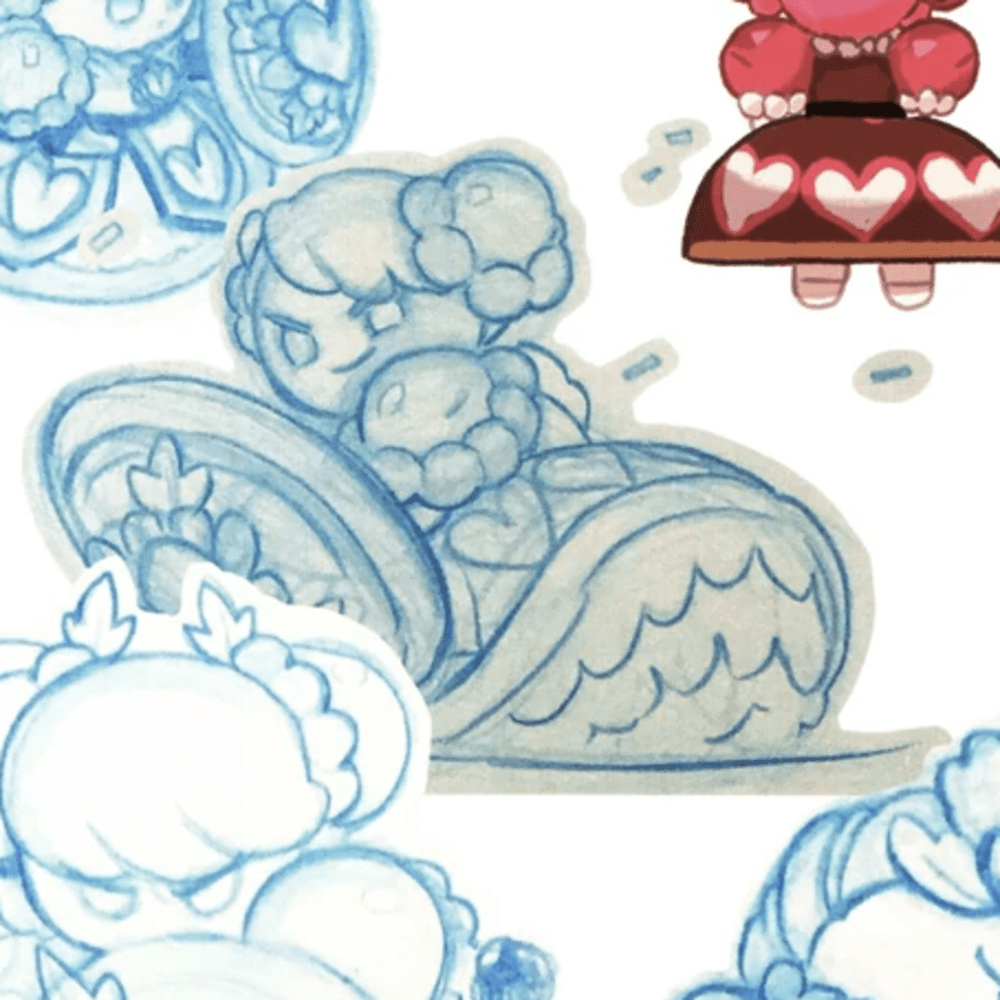
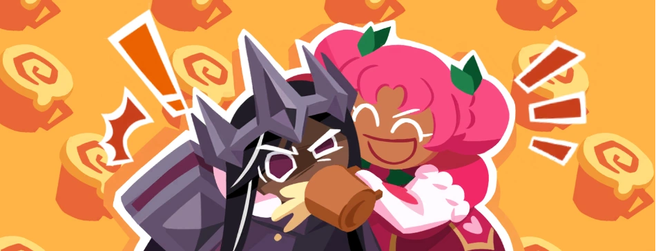

In 2020 December, an animated trailer for Cookie Run: Kingdom was posted. When the five Ancients showed up, Hollyberry Cookie's design stood out to me, she's very buff looking and so much pink and hearts at the same time. Oh I should mention at one point I mistook Holly for Pomegranate Cookie. Overtime, I slowly got attached to Holly, maybe it's her potential of becoming someone great, or the lore of her being the queen of Princess Cookie's kingdom. But I believe the major factor is her strong personality and her voice, she sounds like someone reliable and trustful. When the artbook was released, seeing the page of Hollyberry, I imagined she would be the type to not enjoy sitting in meetings, have very charming personality, and have a strange rival/friendship with Pitaya. I looked forward to Hollyberry's release, but shockingly, unlike Pomegranate, who took a long time to finally have content, Holly got her time to shine very quickly.

( my favourite artbook drawing of Hollyberry )
8 months after CRK's release, Hollyberry was released along with Chapter 11-12, which revolves around Holly and her kingdom. Contrary to PV's arc, which was darker, Holly's story is more light-hearted. At first I felt kinda bummed, but the story was still very enjoyable. Holly, who lost her memories and became Unnamed Huntress, with her Soul Jam thing, Light of Passion, she was guided to her kingdom and rediscovered her past life. She learnt that she founded the Hollyberry Kingdom, and even had grandchildren, but she left the kingdom feeling guilty about losing the Dark Flour War. Nevertheless, she realised even after disappearing from the kingdom, her people and family never forgot about her, and always followed their queen's steps. She picked up her Soul Jam shield again, and protected her kingdom once again.
But what I was looking forward the most was her reaction learning that White Lily Cookie, one of the Ancients and a friend, actually being Dark Enchantress Cookie. In The Council of Heroes, Clotted Cream Cookie exposed the truth trying to convince the Ancients to lend their Soul Jams. Holly was very upset, telling Pure Vanilla that he is just like White Lily, always hiding secrets from the other Ancients. Despite feeling hurt, Holly eventually decided to reconcile remembering that friends always stay together. Man that moment still hurts me a lot, seeing close friends argueing like that. But from this, we get to understand how much Holly cares about her friends. Aside from this part, through out The Council of Heroes, Holly's character was very fleshed out, she was shown to be very affectionate, like hugging PV a bit to hard and shoving beer into Dark Cacao's mouth, it's like fanon content got turned into canon. This is one of my favourite stories in Cookie Run, and it deepens my love for Holly.

This story is fairly recent, Hollyberry got to be the main character again in Legend of the Red Dragon. At the climax of the story, Pitaya Dragon Cookie suggested Holly to break her Soul Jam to break the seal which is the power source of Dark Enchantress, but breaking the Soul Jam means that Holly would lose her powers and immortality. Despite the risk and loss, Holly decided to give up her powers if it was to protect her loved ones, well except that she found a loophole in the curse and crisis averted, guess the status quo is maintained ¯\_(ツ)_/¯. Nevertheless, what's great about this scene is that we can see Holly's love for her friends and family in her actions. In previous stories and scenes, she mentioned she would do anything to protect those she cared about, and in this scene, we know that those words are no lies. Honestly, it makes her more admirable than she already is ( despite the whiplash of that plot twist that no Soul Jam needs to be crushed ).
This is a more personal part. Hollyberry is the type of character I admire a lot, being outgoing, strong and confident, call me insecure but I have been wishing I'm more like that ever since I was a child. Her entire character just sparks joy, it is hard to not like her. If I have to be honest, I would have a crush on her if she were a real person.